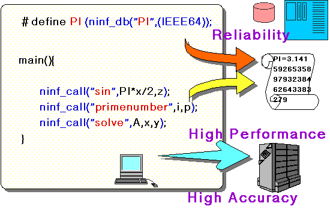

ネットワーク数値情報ライブラリ
Ninf: A Network based Information Library
for Global World-Wide Computing Infrastructure
以下のような不満や希望はありませんか？
Ｎｉｎｆはこれに応えて設計しています
スーパーコンピュータに載っている素晴らしいライブラリを使ってみたい
- だけど，プログラム書いたり最適化が面倒
- 数値表現が違うんだって？
- グラフィックスはＰＣ・ＷＳを使いたいんだけど
- プログラムはできるだけ変更したくない
- ライブラリがたくさんあってどれを使っていいかわからない
ちょっとした（行列・特殊関数）計算をしたいのだけど
- 電卓じゃ役不足
- プログラムを書くほどじゃないし
- 簡単なインターフェースはないの？
世界中の計算機を使えば速くできるのに
- どうやって使えばいいの？
- 負荷分散はどうするの？
- プログラムを書き直すのはいやだ
Ｎｉｎｆ設計の概要
- Ｐｒｅ−Ｃｏｍｐｉｌｅされた関数・ライブラリの実行形式や
データを広域分散化したサーバー上に保存し，ネットワーク
環境においてユーザからの要求に応じて計算結果を戻す
遠隔手続呼び出しのシステム
- ユーザは標準的数値ライブラリ，特殊関数，数値定数等に
ユーザプログラムの変更を最小限に留めたまま容易にアク
セスできるシステム
- ユーザはライブラリのコンパイル手法，存在場所，呼出方法に
対する知識の一部などを隠蔽するシステム

Ｎｉｎｆリモートライブラリ実行

- すべてのライブラリを実行形式で格納
- ＯＳ，最適化手法，ハードウエアの特性を
気にしなくてよい （予めサーバー側で実現することが可能）
- ユーザはライブラリのインタフェースを指定
 有効なツール群 (一例)
有効なツール群 (一例)
 Ｎｉｎｆな人々
Ｎｉｎｆな人々
- Email: ninf@apgrid.org
- Phone: +81 (298) 58-5300
- Fax: +81 (298) 58-5301
- Mail:
- Ninf administration group
- c/o Satoshi Sekiguchi
- Computer Systems Division
- Electrotechnical Laboratory
- Umezono, Tsukuba, 305 JAPAN